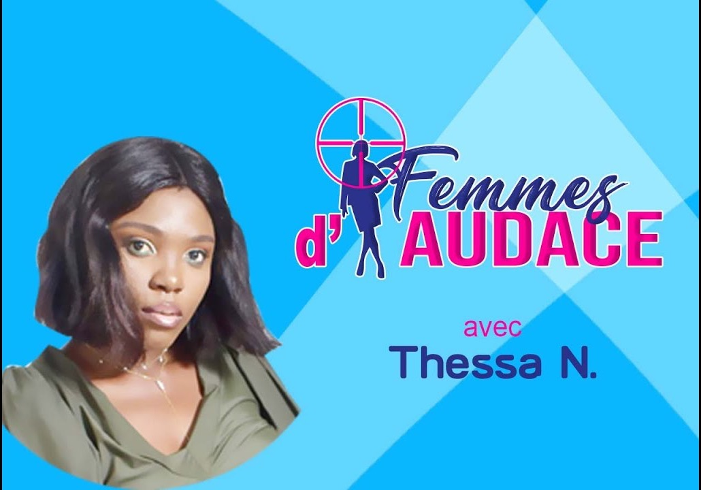
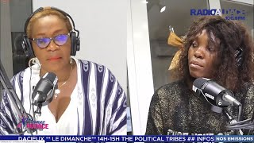
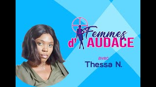

Émission
Femmes d'Audace
Une tribune de promotion des compétences et du leadership au féminin.
- Diffusion
- Chaque samedi, 10 h
- Présentation
- Thessa N. (saison 2021)

Archives vidéo
Les émissions filmées de la saison 2021, à revoir.

VidéoÉmission du 28 décembre 2021

VidéoÉmission du 3 décembre 2021
Émission du 11 octobre 2021
Miss Santé Sud-Ouest Cameroun, édition de 2020
5 vidéos · de février à décembre 2021.
Les autres émissions
Tous les rendez-vous de l'antenne.
Lun – Ven · 7 h
Le Train d'Audace
La matinale d'information : rubriques, invités et la parole aux auditeurs.
Lun – Ven · 12 h
Audace Info Midi Magazine
Politique, économie, culture, santé et sports, avec la parole aux experts.
Lun – Ven · 15 h
Le Club Audace
La tribune qui décortique l'actualité sportive, scoops et analyses.
Jeudi · 14 h
Parlons Droit !
Droit pénal, civil, matrimonial : des acteurs reconnus répondent à vos questions.
Mercredi · 10 h
Santé Magazine
Santé et bien-être, avec les spécialistes qui répondent aux préoccupations.
Samedi · 12 h
Bold Génération
La vitrine du savoir-faire jeune et du patrimoine culturel camerounais.